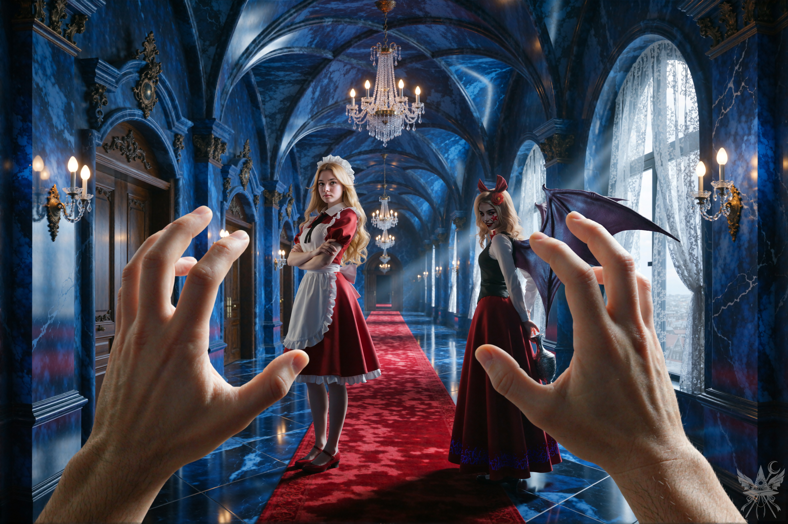
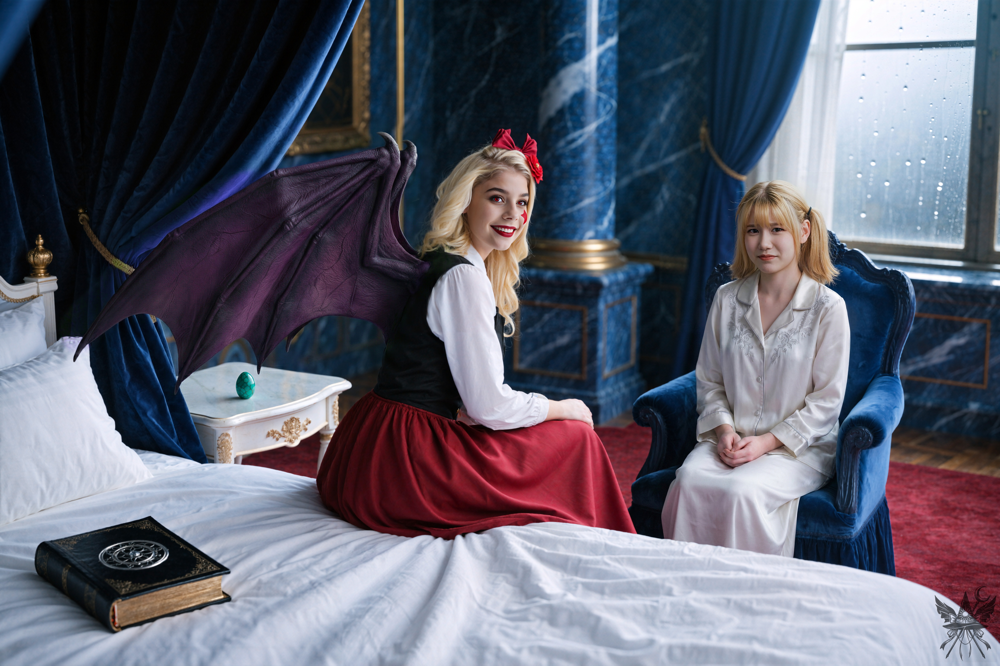

第60章 嵐の前の静けさ
魔界最古の建造物、パンデモニウム。無機質で冷たい艶を放つ広大な宮殿は、今日もメイドたちの足音と衣擦れの音で満たされている。だが、その整然とした喧騒の底には……いや、そんな重苦しい空気なんて、俺の脳内には一切存在しない！

強烈な逆光が差し込む回廊の中央で、硬質な金属器の触れ合う音が微かに響く。何かを背後に隠し持つセクシーで小悪魔的なエリスの気配と、それを咎めるように立ち塞がるメイド長・夢子の絶対零度の冷気。俺の目には、その緊迫感すら最高のご褒美イベントにしか映らない。
「よっしゃー！ 俺の出番キターーー！」
歓喜の叫びと共に、俺は夢子とエリスの間に割って入った。
「二人とも、今日もすっげーキレイっすね～！ 天気もいいし、サイコーっす！」
「あんた、誰よ？」
エリスが面倒くさそうな声で、無遠慮な俺を値踏みする。
「太郎っす！ この丸メガネがトレードマーク！ よろしくぅ～！」
「メガネ…？ うーん…前にメガネかけてた男がいたような…」
エリスは顎に手を当て、過去の記憶を辿る気怠げなため息をついた。
「…結局、シチューの具になっちゃったけど。役に立たない男は、他に使い道がないものね。あんたはどうなの？ 何か面白い特技でもあんの？」
「ちょっと、あなた！ ここは神綺様の宮殿よ！ 礼儀をわきまえなさい！」
冷たいナイフのような夢子の叱責が突き刺さる。
（神綺… そうか、あのボスの人とにゃんにゃんすればいいのか！…でも、目の前の夢子さんやエリスっちも悪くねぇなぁ…。よし、選択肢ゲットだぜ！）
【 】エリスっちとにゃんにゃんする
【 】夢子さんとにゃんにゃんする
【 】奥に進んで神綺様とにゃんにゃんする
【 】自分とにゃんにゃんする
（う～ん…、どれにしよっかな～…？ ///）
脳内で幸福な演算を繰り返していると、また別の気配が近づいてきた。
（ち、ちゆりんだ！ ちゆりん、ゲットだぁぁぁ！）
「ちゆりん！ まだ会ったことないけど…、きっと、すぐに仲良くなれるって！ ね？」
しかし、ちゆりから返ってきたのは圧倒的な無言の圧力だった。何も映していない虚ろな瞳が、ただこちらを凝視している。
「ねぇ、ちゆりん？ どうしてそんな目で僕を見るんすか？ 挨拶してくれないし、君の素敵な笑顔も見せてくれないし…」
無機質な足音が距離を詰める。
「ちょ…ちゆりん、そのパイプ椅子をどうする…？ ちゆりーーーん！！」
ゴツン！！
（はぁ…。残された選択肢は『【〇】自分自身とにゃんにゃんする』だけか…。ゲットするしかないか…。くそっ…それもブロックされちまった…）
＊＊＊
後頭部に響く、ハンマーで殴られたかのような鋭い鈍痛。すべすべとした上質なシーツの感触が、狂気じみた夢の終わりを告げていた。
重い瞼をこじ開け、メデアは薄暗い客室を見渡した。ゆっくりと上体を起こし、痛む患部にそっと触れる。ひどい有様だが、命に別状はないらしい。
（とりあえず、ここは安全みたい。それにしても、さっきの夢は…何だったのかしら）
ベッドから降り、足裏に伝わる冷たい床の感触を確かめる。手元には、昨晩の騒動をくぐり抜けた見慣れた古書と、青緑色の冷たい鉱石の感触が残されていた。
窓ガラスを無数に叩きつける雨音が、部屋の気まずい空気を際立たせている。昨晩の阿鼻叫喚が嘘のように静まり返った室内には、洗い立ての柔らかな布地に身を包んで小さく縮こまるちゆりの神妙な気配と、それを面白がるエリスの悪戯な笑い声が同居していた。

「おはよう！ よく眠れた？」
弾むような声と共に、エリスが勢いよく背中に抱きついてくる。痛む後頭部へわざとらしく触れてくる指先。
「うわっ、痛そう！ ねぇ、あんたの友達、昨日ヤバかったわよ！ ちょっとタイプかも」
「おはよう、エリス。最悪の目覚めだわ。最初はカナの夢を見て、それからわけのわからない夢に変わって…」
メデアはだるい身体を持て余しながら、ベッドの縁に腰掛ける。
「カナの夢を見てたって？ なかなか鋭いじゃない。アリスの正体は、ポルターガイストのカナ・アナベラルだったのよ」
「やっぱりね…。で、その後どうなったの？」
気まずそうに身を縮めていたちゆりが、ようやく口を開く。
「メデア、あの… ごめんな！」
「大丈夫よ。痛かったけれど、もう気にしていないわ。それより、みんな無事だったみたいでよかった」
「まあね。無事っちゃ無事だけど、カナは逃げちゃったわ」
窓の外の雨音を聞きながら、エリスが肩をすくめる。
「仕方ないわね。カナのことだから、驚かないわ。結局、昨日の騒動は…全部現実だったの？」
ちゆりが重いため息を落とす。
「昨日は朝からバタバタしててさ、薬飲むの、すっかり忘れちまってたんだ…。大丈夫だと思ってたんだけど、夕方になったら急に不安になっちまって…」
すかさずエリスが茶化すように割り込む。
「ちゆりんがどんな化け物になったか、見ればよかったのに！ アタシなんて、背中を殴られて、テーブルの上を引きずり回されたのよ。そしたらちゆりんがアリスに飛びかかって、椅子で滅多打ち！ 文字通りの狂犬！ 一瞬でボコボコよ！ みんな必死に防御して、弾幕を撃ちまくってたんだけど…。そしたら、ちゆりんがアリスの顔を思いっきり殴ったら、顔が剥がれ落ちて、カナの姿に戻った途端、逃げようって…笑っちゃったわ！」
居心地の悪さに身をよじらせながらも、ちゆりが弁明を続ける。
「実はさ、昔、幻想郷でカナに会ったことあるんだ。遺跡でさ…。あのポルターガイスト、最初から頭おかしかったんだよ！」
「そう…。ところで、ちゆりの薬って一体何なの？ なにか病気…？」
「えーっと… 病気って言うか…、ずっと飲んでるやつでさ…。昨日はサリエルが落ち着かせてくれたから正気に戻ったんだ。大天使って、やっぱすごいよな。だから、よっぽどのことがない限り、宇宙船までは大丈夫だと思うんだけど…。 あ、そうそう、夢美様にも連絡しといたから、『メデアによろしく』って言ってた」
「北白河様、ご希望のハイパーストーンを……。あら、メデア様、お目覚めですか？ よくお休みになれましたか？」
廊下から、氷のように静かで整った夢子の声が響く。
「夢子さん、ありがとうございます。おかげさまで、ぐっすり眠れました。…ということは、あの偽者はもう正体がバレて、あの茶番劇も終わったんですね？」
「ええ、最初からメデア様のおっしゃる通りでした。それに、昨日あなた様方が三人で倒された者も、以前はこのパンデモニウムでメイドのふりをしていたようで、今回の陰謀に関わっていたようです。お嬢様のご意向により、必要なものはすべて提供されますし、パンデモニウムに好きなだけご滞在なさることも許可していただきました」
メデアは表面上の微笑みを浮かべ、探りを入れる。
「神綺様にはお会いできますか？」
「申し訳ございませんが、今は難しいようです。ご覧の通り、あのような状態ですので…」
夢子が示した窓の外では、激しい風が宮殿の尖塔を震わせ、不気味な唸り声を上げていた。
「皆様、朝食の準備がもうすぐ整います。その前に、衣装部屋へお越しになって、衣装をお選びくださいませ」
案内された部屋には、乾いた布の匂いと防虫香の香りが立ち込めていた。メデアは並べられた膨大な数の衣服から、肌触りがよく動きやすい簡素なものを選ぶ。
食堂へ向かうと、昨晩の狂乱の痕跡は完全に拭い去られていた。温かな湯気を立てる朝食の席で、エリスが上機嫌に語り出す。
「……人間を魔界に召喚することなんて、朝飯前よ。召喚者は自分の絵を描いて、そこにアストラル印章を付けるの。それを人間界に、釣り針みたいに投げ入れれば、獲物は勝手に引っかかってくるってわけ。で、絵を見てる人間のスヴァディシュターナから強いエネルギーが放出されたら、印章がそれを追跡して、アタシたちがポータルを開いて魔界に引きずり込むのよ。ふふっ、長年かけて、その技術を磨いてきたんだからね。まあ、かわいそうだけど、ああいう男も自業自得だわ。そうそう、ルイズっちが言ってたんだけどさ、人間界で最近、ヒゲ面の青年がやたらと行方不明になってて、探偵が捜査に乗り出したらしいのよ」
ちゆりはすっかりいつもの快活さを取り戻している。メデアは胸を撫で下ろす一方で、魔界の主の精神状態を憂慮していた。
食後、南棟のバルコニーで待つという神綺のもとへ、メデアは一人で向かう。珍しくエリスは大人しく留守番を引き受けていた。

扉を開けた瞬間、暴風雨が容赦なく肌を打つ。世界そのものが創造主の絶望に同調して泣き叫んでいるかのような、底冷えする悲壮な空気が空間を支配している。激しい雨音と雷鳴が轟く中、圧倒的な孤独を背負った神綺が、彫像のようにバルコニーの端に立ち尽くしていた。
「神綺様、お呼びでしょうか」
「メデア、もうかしこまらなくていいわ」
振り向いた神綺の声には、微かな疲労と柔らかな笑みが混じっていた。
「ただ…お礼を言いたかったの。あなたが動いてくれなかったら、私たちは今頃、あの偽物に操られて、無意味な戦争を始めていたかもしれないわ。このセクターの世界には問題が山積みで…英雄が必要なのよ…」
「英雄…？ 私は自分にできることをしただけです。それに、結局は自分の目的のために動いただけですね。勘違いしないでください。英雄譚は子供の頃にたくさん読みましたが…、ああいう存在にはなりたくありません」
「自分の目的のため、ね…。でも、『自らを救えば周囲も救われる』と言うでしょう？ あなたの行動は結果的に多くの人を救ったわ」
メデアの脳裏に、あの身勝手なポルターガイストの姿がよぎる。
「そうかもしれませんね。人が助かるのは悪いことではありません。でも、皆を幸せにすることなんて…不可能です。あのポルターガイストは結局どこへ行ったか、ご存知ですか？」
「窓から逃げ出したわ。それだけよ…。娘がいて… いなくなった…。…いや…、もしかしたら、最初からいなかったのかもしれないわ…」
神綺が言葉を詰まらせた瞬間、天の底が抜けたかのように雨足が激しさを増した。
「メデアの目的は覚えているわ。私自身は…怪物と戦う気力はないの…。でも…魔界で最も強い存在…夢子の支援を約束しましょう」
雨音に掻き消されそうな、静かな宣言。
「もし…幻想郷で本物のアリスに会ったら…、よろしく伝えてくれるかしら？」
「分かりました。神綺様のご恩…、忘れません。カナが以前、地獄でコンガラを操っていたので…、同じ状況になるかと覚悟していましたが…。神綺様は常識的な方でよかったです」
一礼してバルコニーを辞し、ホールへ戻る。
エリスとちゆりが、冷たい金属の塊のような杖と盾を弄っていた。人工チャクラエネルギーで駆動するというそれは、持ち上げるだけで骨が軋むほどの重量がある。
「見て見て、メデっち！ これ、人工チャクラエネルギーで動くんだって！」
側面にある硬質なリングを回しながら、エリスがはしゃぐ。
メデアは試しに魔力を込めて放ってみるが、空気の震えは手持ちの鉱石を通した魔法より明らかに劣っていた。
「エリスも試してみない？ 試し撃ちぐらい、いいでしょう？」
「結構よ。アタシは自分の杖で十分満足してるの。こんなオモチャで喜ぶなんて、子供みたい」
「申し訳ありませんが、軍隊はすでに編成済みのため、鎧とポーションは今は提供できません」
静かに歩み寄ってきた夢子が頭を下げる。
（こんな重いものを装備して歩き回るなんて、正気の沙汰じゃないわ…）
「その代わり、お嬢様のご厚意で、皆様に5,000シンキずつお渡しすることになりました」
途端に、エリスの気配が欲望に染まるのを肌で感じた。
（この女、頭の中は金のことしかないのかしら…？）
メデアは思考を切り替え、冷徹なメイド長に向き直る。
「夢子さんも一緒に戦ってくれるんですよね？」
「もちろんです。私にできることは何でもいたします」
「ありがとうございます。ところで…、夢子さんの主要チャクラは何ですか？」
「サハスラーラです」
ユウゲン・マガン討伐に向けた盤面が整いつつある。
（ちゆりに薬を与えず、あの狂乱状態のまま前線に放り込めば、強力な手駒になるかもしれない…。だが、リスクが高すぎる…）
メデアは痛む後頭部に触れながら、冷徹な計算を巡らせる。
（幻月の真意も不透明だ…。いや、今は余計な雑音は捨てて、あの怪物を屠る算段をつけるのが先決ね…）
[SYSTEM ALERT: 音響兵器デプロイ完了]
▼ 本章の絶望を1000%味わうための専用聴覚データ ▼
■ YouTube：『創世の檻（Cage of Genesis）』